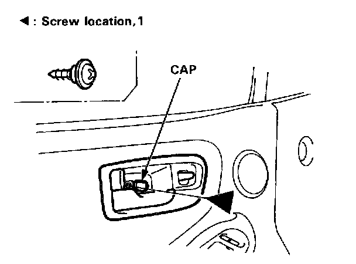
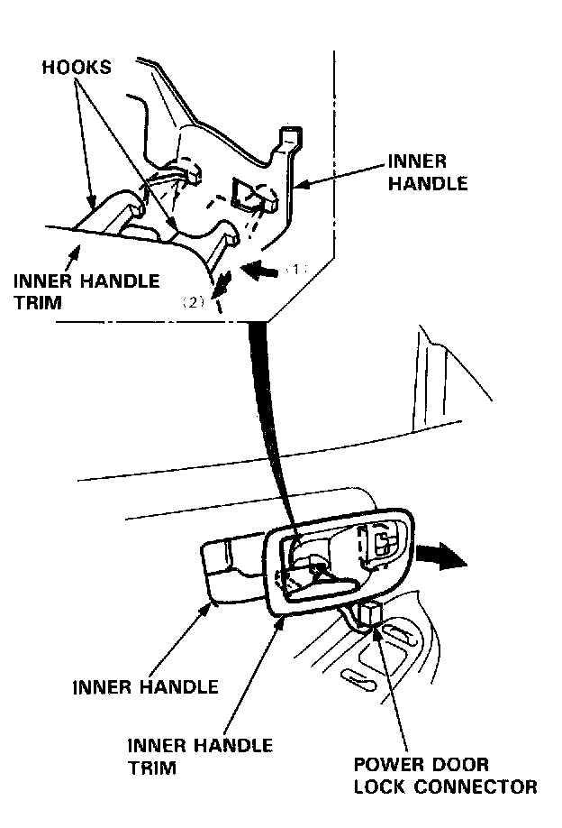
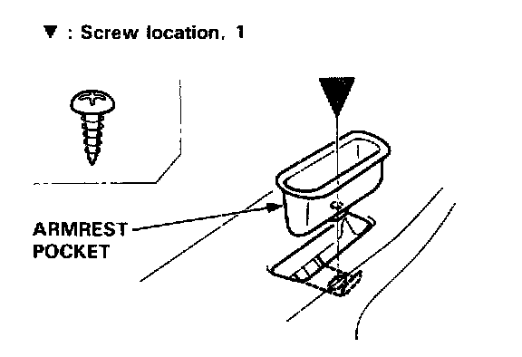
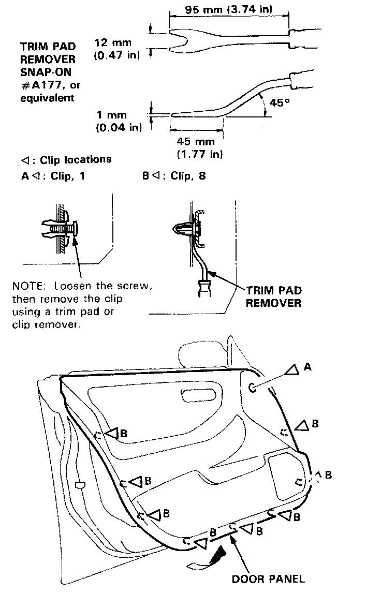
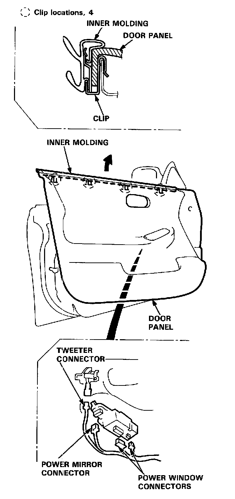
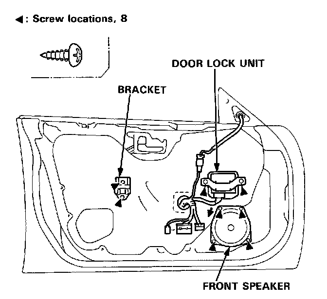
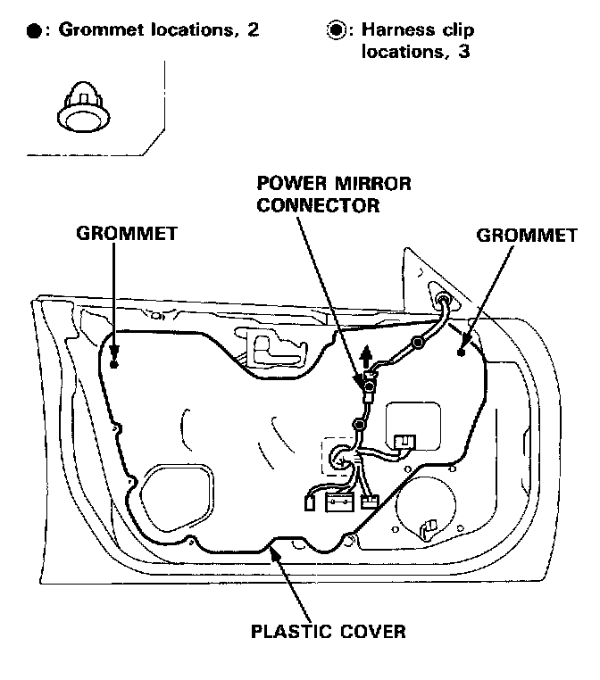
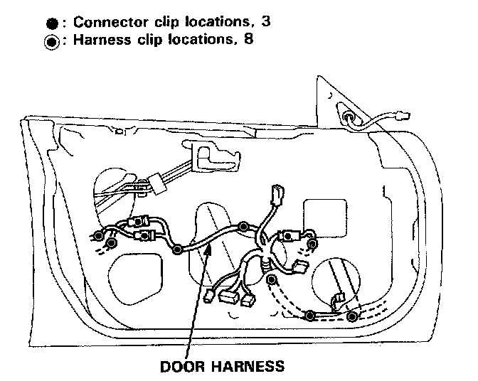
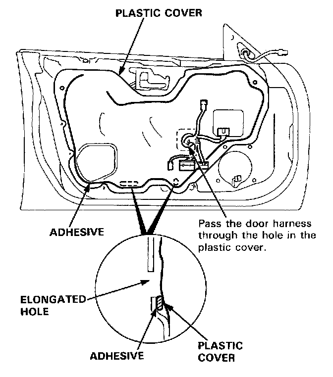
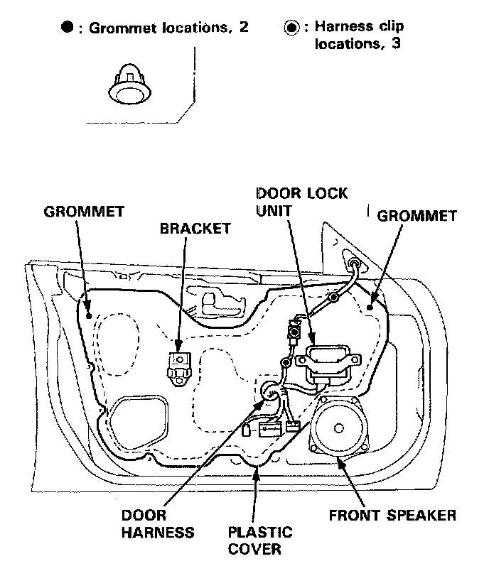

Sedan
Door Panel/Plastic Cover ReplacementNOTE: Take care not to scratch the door panel and other parts.

1. Pry out the cap and remove the screw.

2. Remove the inner handle trim while pulling the inner handle. Disconnect the power door lock connector.

3. Remove the armrest pocket.
4. Release the clips that hold the door panel.

NOTE: Remove the door panel with as little bending as possible to avoid creasing or breaking it.
5. Detach the clips, and remove the door panel by pulling it upward.

NOTE: Take care not to twist or scratch the inner molding.
Disconnect the following:
- Power window connectors
- Power mirror connector
- Tweeter connector

6. Remove the bracket, door lock unit and front speaker.
7. Remove the cover panel, then disconnect the power mirror connector.

8. Detach the grommets and harness clips, then carefully remove the plastic cover.

9. Before installing the plastic cover, make sure the door harness and connectors are fastened correctly on the door.
10. Install the plastic cover.

NOTE:
- Apply adhesive along the edge where necessary to maintain a continuous seal and prevent water leaks.
- Do not plug the elongated hole.

11. Install all removed parts, and fasten the door harness correctly.
12. Install the door panel.
NOTE:
- Make sure the door harness is not pinched.
- If necessary, replace any damaged clips.
- Make sure the connectors are connected properly.
13. Install the armrest pocket and inner handle trim.
NOTE: Make sure the connector is connected properly.